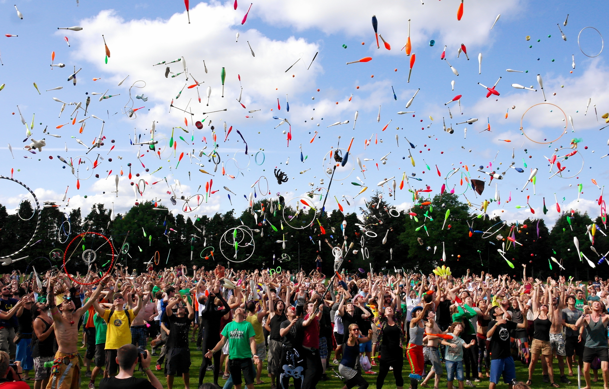

지속가능한 축제산업 발전을 위한
문화콘텐츠 조사, 연구, 개발
주요사업 목록
- 축제아카데미 개설
- 축제문화와 관련 산업 융복합 기법, 정책 개발
- 축제 전문 인력 양성 교육 및 컨설팅
- 축제 산업 발전 방안 연구 개발 및 실행
- 축제 관련 산업 창업 및 경영지원, 경영진단
- 축제 산업 저작권 및 지적재산권 보호, 관리, 유통
- 축제 관련 학술회의, 박람회 개최 및 국제 교류 활성화
- 축제 및 관련 산업 실태 조사, 컨설팅, 평가, 감리
- 축제 관련 학술연구용역, 출판 및 디자인
- 축제 문화 및 관련 산업 발전에 기여한 자(단체)에 대한 시상
- 축제와 관련하여 국가, 지방자치단체 및 공공기관 등으로부터 위탁받은 사업
- 설립 목적 사업을 위한 수익사업 및 부대 사업
